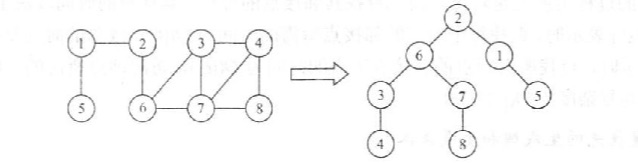
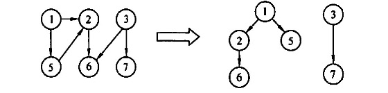
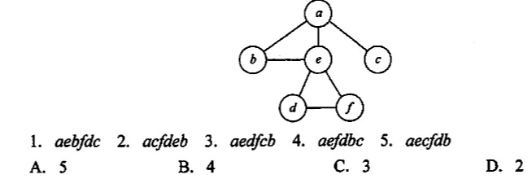
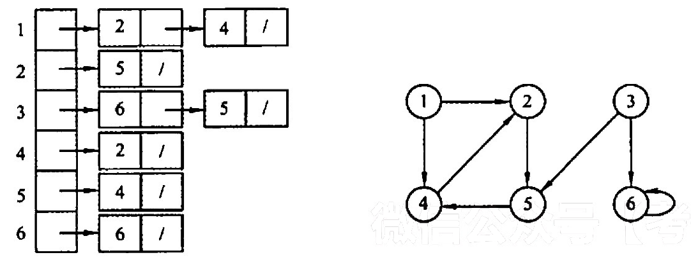
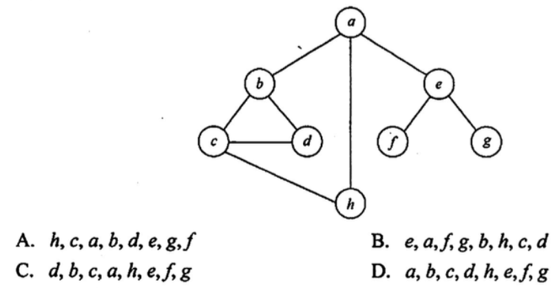
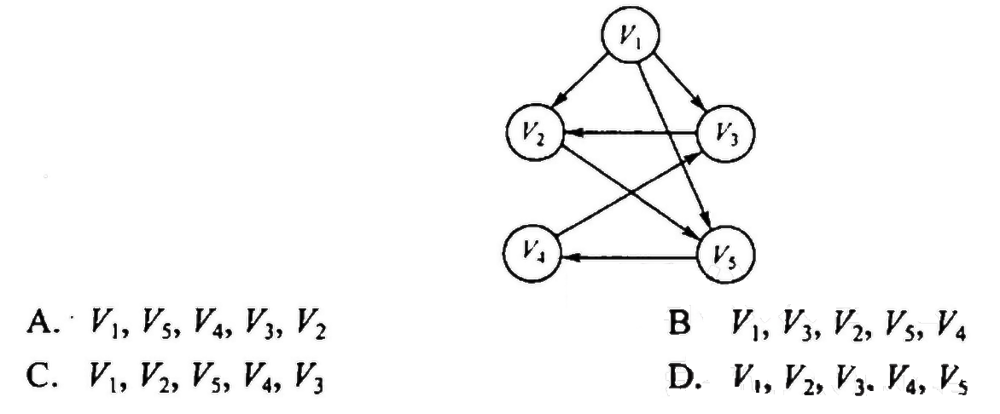

2022.09.15
| 内容 | 时间复杂度 | 空间复杂度 |
|---|---|---|
| 辅助队列Q | O(V) | |
| 邻接表 | O(V+E) | |
| 邻接矩阵 | O(V^2) |
【单源最短路径求解】也可以用visit数组保存路径长度，（之前是保存bool类型，是否访问），如果不是0代表访问过。新的结点路径长度为刚才结点路径+1即可。
【广度优先生成树，生成森林】

| 内容 | 时间复杂度 | 空间复杂度 |
|---|---|---|
| 递归形成的栈 | O(V) | |
| 邻接表 | O(V+E) | |
| 邻接矩阵 | O(V^2) |
【深度优先生成树，生成森林】

下列关于广度优先算法的说法中，正确的是（ ）
I. 当各边的权值相等时，广度优先算法可以解决单源最短路径问题 II. 当各边的权值不等时，广度优先算法可用来解决单源最短路径问题 III.广度优先遍历算法类似于树中的后序遍历算法 IV. 实现图的广度优先算法时，使用的数据结构是队列 A. I、 IV B. II、III、IV C. II、IV D. I、III、IV
【答案】：A
对于一个非连通无向图G，采用深度优先遍历访问所有顶点，在 DFSTraverse 函数(见考点讲解DFS 部分）中调用DFS 的次数正好等于（）。 A.顶点数 B.边数 C.连通分量数 D.不确定
【答案】：A -> C
对一个有n个顶点、e条边的图来用邻接表表示时，进行DFS 遍历的时问复杂度为(），空间复杂度为（)：进行BFS 遍历的时问复杂度为（），空间复杂度为（）. A. O(n) B. O(e) C. O(n+e) D. O(1)
【答案】：CACA
对有n个顶点、e条边的图采用邻接短阵表示时，进行 DFS 遍历的时问复杂度为（ ），进行 BFS 遍历的时间复杂度为（） A. O(n^2) B. O(e) C. O(n+e) D. O(e^2)
【答案】：AA
无向图G=(V,E)，其中 V={a,b,c,d,e,f}，E={(a,b),(a,e), (a,c), (b,e),(c,f),(f,d),(e,d)}，对该图从a开始进行深度优先遍历，得到的顶点序列正确的是(）. A. a, b, e, c, d,f B. a, c,f, e, b, d C. a, e, b, c,f, d D. a, e, d, f, c, b
【答案】：abedcf,acfd,aed，D
如下图所示，在下面的5个序列中，符合深度优先遍历的序列个数是(）。

【答案】：D
用邻接表存储的图的深度优先遍历算法类似于树的（ ），而其广度优先遍历算法类似于树的（）。 A. 中序遍历 B. 先序遍历 C. 后序遍历 D. 按层次遍历
【答案】：BD
一个有向图G的邻接表存储如下图所示，从项点1出发，对图G调用深度优先遍历所得项点序列是（ )；按广度优先遍历所得项点序列是（ ）

A. 125436 B. 124536 C. 124563 D. 362514
【答案】：A、B
无向图G=(V，E），其中V={a.b,c,d.e.f}，E={(a, b),(a.e),(a,c),(b,e),(c,f),(f,d),(e,d)}，对图进行深度优先遍历，不能得到的序列（ ）
A. acfdeb B. aebdfc C. aedfcb D. abecdf
【答案】：acfdeb，aebdfc，aedfcb，D
判断有向图中是否存在回路，除可以利用拓扑排序外，还可以利用（ ）。 A. 求关键路径的方法 B.求最短路径的 Dikstra 算法 C.深度优先遍历算法 D.广度优先遍历算法
【答案】：C
使用DFS 算法递归地遍历一个无环有向图，并在退出递归时输出相应顶点，这样得到的顶点序列是（）。 A. 逆拓扑有序 B. 拓扑有序 C. 无序的 D. 都不是
【答案】：A
设无向图G=(V，E），和G'=(V',E')，若G'是G的生成树，则下列说法中错误的是( )。 A. G'为G的子图 B. G'为G的连通分量 C. G'为G的极小连通子图且V=M D. G'是G的一个无环子图
【答案】：B
图的广度优先生成树的树高比深度优先生成树的树高（ ）。 A. 小或相等 B. 小 C. 大或相等 D. 大
【答案】：A
对有n个顶点、e条边且使用邻接表存储的有向图进行广度优先遍历，其算法的时问复杂度是（ ）。 A. O(n) B. O(e) C. O(n+e) D. O(ne)
【答案】：C
【2013 统考真题】若对如下无向图进行遍历，則下列选项中，不是广度优先遍历序列的是（）

【答案】：hcabde，eafgb[hcd]，dbca[he]，a[bhe] D
【2015 统考真题】设有向图G-(V，E)的，顶点集V= （V0，V1,V2，V3)，边集B={(V0,V1),(V0,V2),(V0,V3),(V1,V3)}。若从顶点V0开始对图进行深度优先遍历，則可能得到的不同遍历序列个数是（）。 A. 2 B.3 C. 4 D.5
【答案】：D
. 【2016 统考真题】下列选项中，不是下图深度优先搜索序列的是 
【答案】：D
//#include "AdjacencyMatrix.h" // 邻接矩阵//typedef MGraph Graph; 不能正常运行，可能因为先import的邻接矩阵//#include "AdjacencyList.h" // 邻接表typedef LGraph Graph;
void visit(int v){ printf("%d ",v);}
// 广度优先遍历辅助数组bool BFSvisited[MaxVerNum]={0};
// 广度优先遍历(顶点)void BFS(Graph G, int v, bool init=true){ /** 初始化广度优先遍历辅助数组 * 1. 如果需要初始化则将所有位置为未访问 * 2. 不需要初始化的情况:BFS遍历森林 */ if(init) for(int i=1;i<GetVexnum(G)+1;i++) BFSvisited[i]=false; /** 广度优先遍历辅助队列 * 1. 开启BFS访问结点(首结点 * 2. 依次访问结点(队列出队) , 结点的子节点如果未访问就入队 */ LinkQueue Q; LinkQueueInit(Q); visit(v); BFSvisited[v]=true; LinkQueueEn(Q, ele_build(v)); Element e; while(!LinkQueueEmpty(Q)){ LinkQueueDe(Q,e); v = ele_get_weight(e); for(int w=FirstNeighbor(G,v);w>=0;w=NextNeighbor(G,v,w)){ if(!BFSvisited[w]){ visit(w); BFSvisited[w]=true; LinkQueueEn(Q, ele_build(w)); } } }}
// 广度优先遍历(图)void BFSTraverse(Graph G){ for(int i=1;i<GetVexnum(G)+1;i++) BFSvisited[i]=false; for(int i=1;i<GetVexnum(G)+1;i++) if(!BFSvisited[i]) BFS(G,i,false);}
// 深度优先遍历辅助队列bool DFSvisited[MaxVerNum] = {false};
// 深度优先遍历(点)void DFS(Graph G, int v, bool init=true){ if(init) for(int i=1;i<GetVexnum(G)+1;i++) DFSvisited[i]=false; visit(v); DFSvisited[v]=true; for(int w=FirstNeighbor(G,v);w>=0;w=NextNeighbor(G,v,w)) if(!DFSvisited[w]) DFS(G,w,false); }
// 深度优先遍历(图)void DFSTraverse(Graph G){ for(int i=1;i<GetVexnum(G)+1;i++) DFSvisited[i]=false; for(int i=1;i<GetVexnum(G)+1;i++) if(!DFSvisited[i]) DFS(G,i,false);}
void test_graph_traverse(){ printf("图的遍历\n"); Graph G; TestInit(G);
printf("\n广度优先遍历(2):"); BFS(G,2); printf("\n广度优先遍历(5):"); BFS(G,5); printf("\n广度优先遍历(7):"); BFS(G,7); printf("\n广度优先遍历(图):"); BFSTraverse(G);
printf("\n深度优先遍历(2):"); DFS(G,2); printf("\n深度优先遍历(图):"); DFSTraverse(G);}
输出结果
图的遍历1 -> 2( 1)2 -> 6( 1) 1( 1)3 -> 4( 1) 7( 1) 6( 1)4 -> 8( 1) 7( 1) 3( 1)56 -> 7( 1) 3( 1) 2( 1)7 -> 8( 1) 4( 1) 3( 1) 6( 1)8 -> 7( 1) 4( 1)1 - 2 3 - 4| / | / |5 6 - 7 - 8广度优先遍历(2):2 6 1 7 3 8 4广度优先遍历(5):5广度优先遍历(7):7 8 4 3 6 2 1广度优先遍历(图):1 2 6 7 3 8 4 5深度优先遍历(2):2 6 7 8 4 3 1深度优先遍历(图):1 2 6 7 8 4 3 5